codly.diff
Configures automatic parsing, syntax highlighting, gutters, and row fills for raw blocks whose language is diff-<language> or diff,<language>.
Signature
codly.diff(
enabled: bool = true,
added-fill: auto | paint | function = rgb("dafbe1"),
removed-fill: auto | paint | function = rgb("ffebe9"),
meta-fill: auto | paint | function = rgb("ddf4ff"),
context-fill: auto | paint | function = auto,
numbers: bool = true,
markers: bool = true,
added-marker: str | content = "+",
removed-marker: str | content = "−",
old-offset: int = 0,
new-offset: int = 0,
)The fields can also be supplied as a dictionary. A boolean casts to enabled.
Fields
| Field | Type | Default / required | Meaning |
|---|---|---|---|
enabled |
bool |
true |
Whether to process diff-prefixed code. |
added-fill |
none | auto | paint | function |
rgb("dafbe1") |
Added-row background. auto follows the ordinary row fill; none leaves it unfilled. A callback receives the row and its diff record. |
removed-fill |
none | auto | paint | function |
rgb("ffebe9") |
Removed-row background. auto follows the ordinary row fill; none leaves it unfilled. A callback receives the row and its diff record. |
meta-fill |
none | auto | paint | function |
rgb("ddf4ff") |
Patch metadata background. auto follows the ordinary row fill; none leaves it unfilled. A callback receives the row and its diff record. |
context-fill |
none | auto | paint | function |
auto |
Unchanged-row background. auto follows the ordinary row fill; none leaves it unfilled. A callback receives the row and its diff record. |
numbers |
bool |
true |
Whether the default diff gutters display old and new line numbers. |
markers |
bool |
true |
Whether the default diff gutters display change markers. |
added-marker |
str | content |
"+" |
Marker displayed beside an added line. |
removed-marker |
str | content |
"−" |
Marker displayed beside a removed line. |
old-offset |
int |
0 |
Additional offset applied to old-side gutter numbers. |
new-offset |
int |
0 |
Additional offset applied to new-side gutter numbers. |
Behavior
With the block-level diff setting at auto (the default), Codly detects both prefixes and strips them for syntax highlighting. Old and new source views are rendered separately, so removed code does not affect new-side syntax state. Unified patches may contain multiple files and hunks, each highlighted independently. A non-patch snippet may use , +, and - prefixes for context, added, and removed rows.
For fenced blocks, diff-py works in Typst 0.15; use raw(..., lang: "diff,py") on versions without comma support in language tags.
Each fill accepts a paint, none, or auto; auto uses the ordinary row fill. A callback receives the row with a diff record containing kind, old, and new line coordinates, as well as the row’s usual fields. Explicit highlights take precedence over diff fills. Setting diff: false or diff: none disables processing; setting it to true enables the default configuration. Custom gutters replace the automatic old/new/marker columns.
Example: Basic Usage
#import "@preview/codly:2.0.0" as codly
#codly.new(
```diff-py
shared
-old = 1
+new = 2
tail
```,
diff: if diff-enabled { auto } else { false },
)Edit & run on your device
The controls supply the example variables. Their definitions are hidden here; Copy code includes the current values and your edits.
